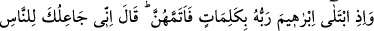
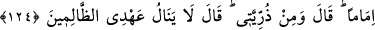
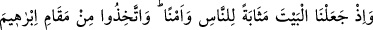
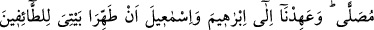
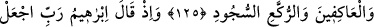
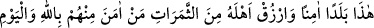
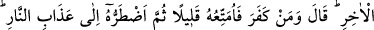
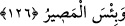

EMİN BELDE
124. Bir zamanlar Rabbi İbrâhîm’i birtakım kelimelerle sınamış, onları tam olarak
yerine getirince: Ben seni insanlara önder yapacağım, demişti. “Soyumdan da
(önderler yap, yâ Rabbi!)” dedi. Allah: Ahdim zâlimlere ermez (onlar için söz
vermem) buyurdu.
125. Biz, Beyt’i (Kâbe’yi) insanlara toplanma mahalli ve güvenli bir yer kıldık. Siz
de İbrâhîm’in makamından bir namaz yeri edinin (orada namaz kılın). İbrâhîm ve
İsmâîl’e: Tavaf edenler, ibâdete kapananlar, rükû ve secde edenler için Evim’i
temiz tutun, diye emretmiştik.
126. İbrâhîm de demişti ki: Ey Rabbim! Burayı emin bir şehir yap, halkından
Allah’a ve âhıret gününe inananları çeşitli meyvelerle besle. Allah buyurdu ki: Kim
inkâr ederse onu az bir süre faydalandırır, sonra onu cehennem azâbına
sürüklerim. Ne kötü varılacak yerdir orası!
“İbrâhîm” kelimesinin kökeni üzerinde çeşitli yorumlar yapılmıştır. Kurtubî,
Tefsîr’inde, kelimenin Süryânîce olduğunu söylerken, Mâverdî, İbn Atiyye’den naklen
kelimenin “baba” anlamına “eb” ve “rahîm” kelimelerinden meydana gelmiş Arapça
bir kelime olduğunu zikretmiştir.
Süheylî de: “Çoğunlukla Arapça ve Süryânîce kelimelerin şeklen aynı veya birbirine
yakın olduklarını söylemiş ve buna “İbrâhîm” kelimesini örnek göstermiştir. Bu
kelimenin “eb” ve “rahîm” kelimelerinden meydana geldiğini ve çocuklara olan
merhametinden dolayı İbrâhîm (a.s.)’a böyle denildiğini söylemiştir. Zira İbrâhîm ve
karısı Sâre kıyâmete kadar mü’minlerin ölen küçük çocuklarının kefilleridir.
Tezkiretü’l-Mevtâ adındaki eserde ise Hz. İbrâhîm’in adının “İbrîm” olduğu ve